ЛАБОРАТОРНО-ПРАКТИЧНА РОБОТА
Тема: «Нанизування сіток»
Мета: засвоєння техніки нанизування сіток, формування вміння виготовляти ажурні браслети, нашийні прикраси, виховувати естетичний смак, терпіння, увагу, повагу та любов до традицій українського народу.
Матеріали та інструменти: бісер різного розміру та кольору, капронові нитки, голки для бісеру.
Порядок виконання роботи:
- Ознайомитись з теоретичними відомостями роботи.
- Виконати завдання практичної роботи.
Теоретичні відомості:
Технологія нанизування сіток широко використовується для виготовлення різноманітних ажурних ланцюжків, комірів, серветок, чохлів для різних предметів. Вироби з сіток з маленькими вічками добре тримають форму. Сітки з великими вічками дуже пластичні, податливі, легко розтягуються. Ажурні чохли приймають форму предметів, на які їх надягають. Бісерні комірки-сітки, закріплені в декількох точках по краю ворота, красиво лягають на сукню.
Низання сіток найчастіше виконується на одну нитку. Намистини, що з’єднують ряди, називаються зв’язками, на рис 27 і 28 вони темні. Стрілками виділений повторюваний елемент сітки – осередок. Збільшуючи або зменшуючи кількість осередків у ряду, отримують вироби різної ширини. Осередки сіток мають форму ромба, витягнутого вздовж рядів. Довжина сторони осередку визначається числом намистин між сусідніми зв’язками.
Перш за все слід детально вивчити процес нанизування простих сіток, щоб потім легко читати схеми. Початок нанизування, як і набір петель у в’язанні, відрізняється від виконання подальших рядів.
Зв’язка – це важливий декоративний елемент. Вона може складатися з декількох намистин і приймати різні форми. Часто зв’язки виконують з бусин, які яскравіші або більші решти матеріалу.
Практична робота
Виконати вправи:
1. Ланцюжок «вісімка» (сітка шириною у пів-вічка) з двома намистинами на стороні осередка (мал. 14). Нанизування здійснюється однією голкою. Закріпіть на кінці нитки допоміжну намистинку (на схемі вона менше за інших намистинок).
l-й і 2-й ряди. Наберіть на нитку десять бісерин. Пропустіть голку через першу бісерину у зворотному напрямку – знизу вгору (мал. 14, а).
3-й ряд. Наберіть на нитку шість бісерин. Пропустіть голку у зворотному напрямку (зверху вниз) через третю від останньої зв’язки бісерину попереднього ряду (мал. 14, б).
4-й ряд. Наберіть на нитку шість бісерин. Пропустіть голку в зворотному напрямку (знизу вгору) через бісерину попереднього ряду, третю від останньої зв’язки (мал. 14, в).
Наступні ряди виконуйте так само, як третій і четвертий (мал. 14, г ).
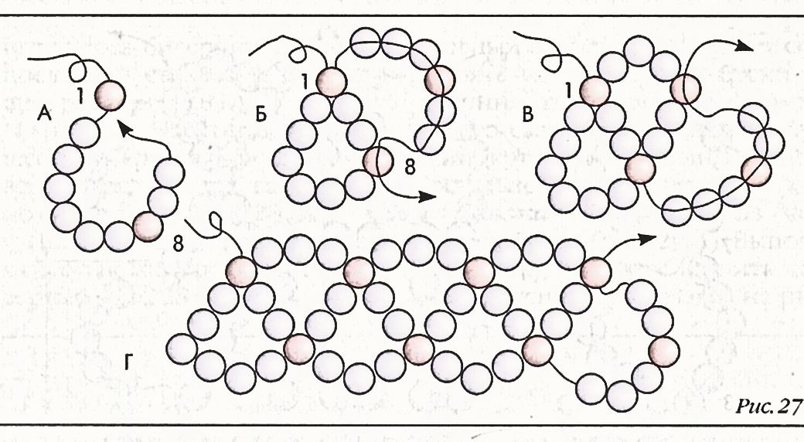
Мал. 14. Ланцюжок «вісімка».
2. Сітка шириною в 2,5 вічка з двома бісеринами на боці осередку (мал. 15).
l-й і 2-й ряди. Закріпіть на кінці нитки допоміжні намистинки. Наберіть 22 бісерини. Протягніть голку через тринадцяту від початку бісерину знизу вгору. Тут і далі голка йде в зворотному напрямку. Наберіть п’ять бісерин. Пропустіть голку через 7 від початку бісерину. Наберіть 5 бісерин. Протягніть голку через першу бісерину (мал. 15, а).
3-й ряд. Наберіть на нитку 6 бісерин. Протягніть голку зверху вниз через бісерину, середню між двома найближчими зв’язками. Наберіть на нитку п’ять бісерин. Пропустіть голку через бісерину, середню між наступними зв’язками в попередньому ряду. Наберіть на нитку п’ять бісерин. Пропустіть голку через бісерину, третю за останньою зв’язкою в попередньому ряду (мал. 15, б).
4-й ряд. Наберіть на нитку шість бісерин і виконайте четвертий ряд так само, як третій, але знизу вгору (мал. 15, в).
Наступні ряди виконайте так само, як третій і четвертий.
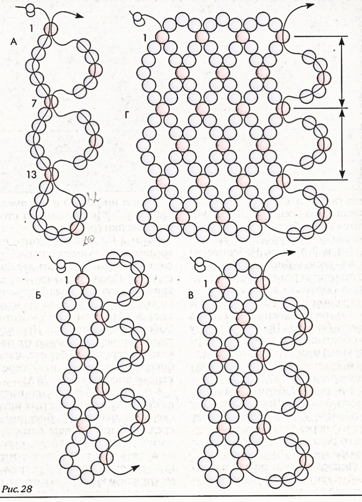
Мал. 15.Сітка шириною в 2,5 вічка з двома бісеринами на боці осередку.
1. Виготовлення нашийних прикрас
1. Наберіть 8 бісерин по схемі:

2. Поверніться голкою в першу бісерину:
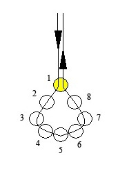
3. Наберіть 4 бісерини за схемою:
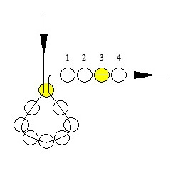
4. Пройдіть голкою у вказану на схемі бісерину:
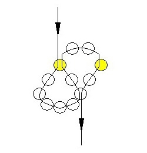
5. Наберіть 5 бісерин:
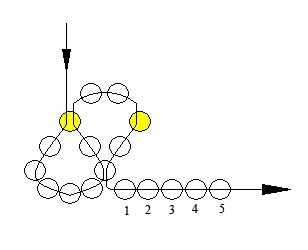
6. Пройдіть голкою у вказану на схемі бісерину:
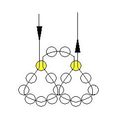
7. Продовжуйте плетіння ланцюжка «вісімка» до необхідної довжини:
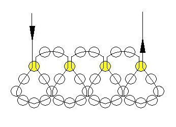
Плетіння підвісок:
8. Наберіть бісерини за схемою (велике коло – бісерина «під перли»):
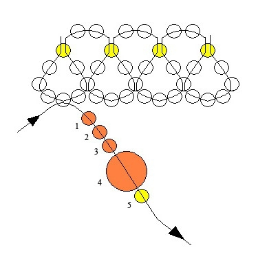
9. Поверніться голкою у велику бісерину:
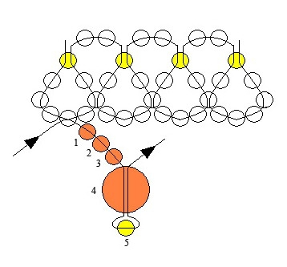
10. Наберіть 3 бісерини за схемою:
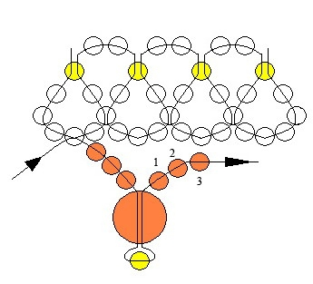
11. Підплетіть підвіску до основи:
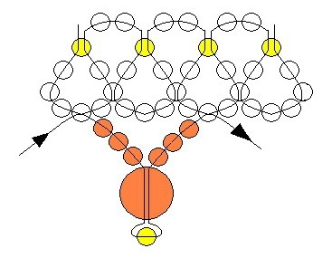
12. Плетіть підвіски до потрібної довжини:
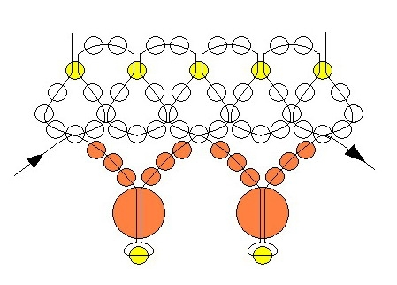
Розшивка основи:
13. Пройдіть голкою в першу бісерину основи у напрямку «зверху-вниз» і наберіть 3 бісерини за схемою (велике коло – бісер 9/0):
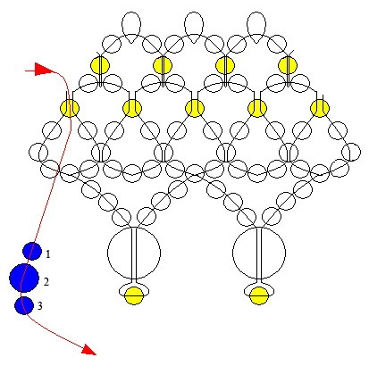
14. Пройдіть голкою у наступну бісерину-зв’язку бісерину основи у напрямку «зверху-вниз»:
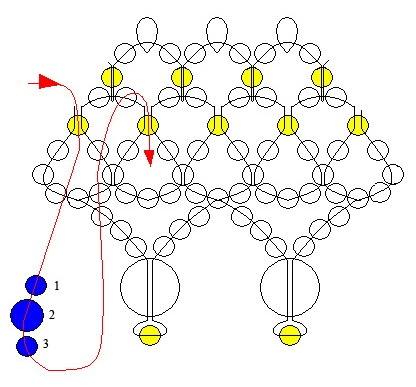
15. Бісерини розмістяться над основою другим шаром:
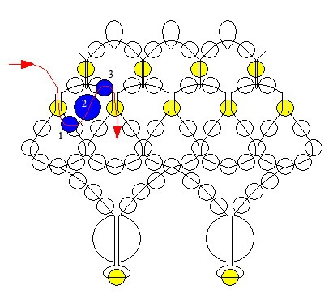
16. Продовжуйте розшивати основу за схемою до необхідної довжини:
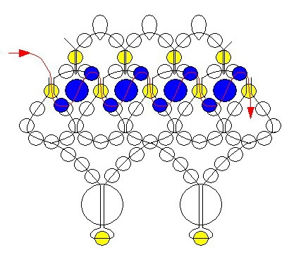
Контрольні питання:
- 1. Як називаються намистини, що з’єднують ряди?
- 2. Скільки ниток потрібно для низання сіток?
- 3. Як отримують вироби різної ширини?